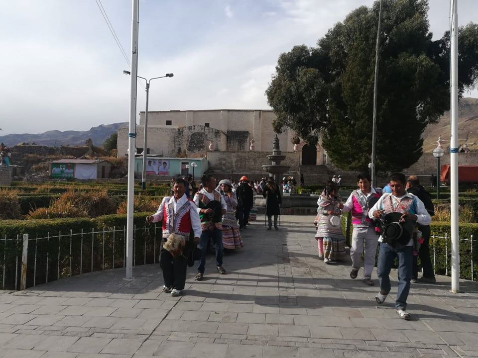
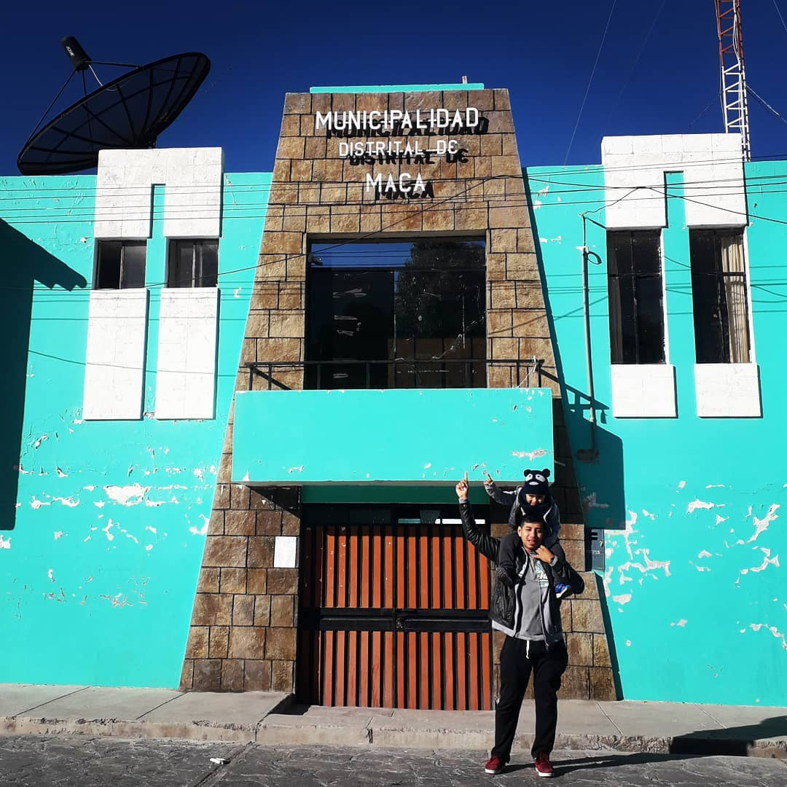

FLORA Y AGRICULTURA
The maqueña agriculture is very varied since diverse types of food plants are cultivated, from tuberculos like the potato... See more

COSTUMBRES Y TRADICIONES
The Qamili is a dance of the fertility of the earth, because it is only danced in the sowing and in all its execution ritual. See more

FAUNA
Today there is a great variety of animals in the district, we started with the domestic animals that the inhabitants benefit from, the cow, See more

TURISMO
Tourism is an activity that is gradually becoming important for the economy of the population. Being close to the Colca Canyon... See more

Maca
The ancestors tell that the place where the district of Maca is now was a giant lagoon, however, there were already settlements ... See more